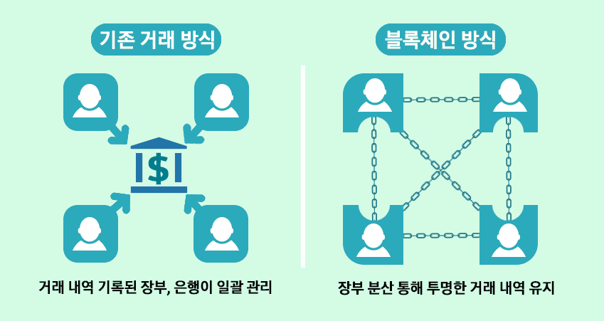
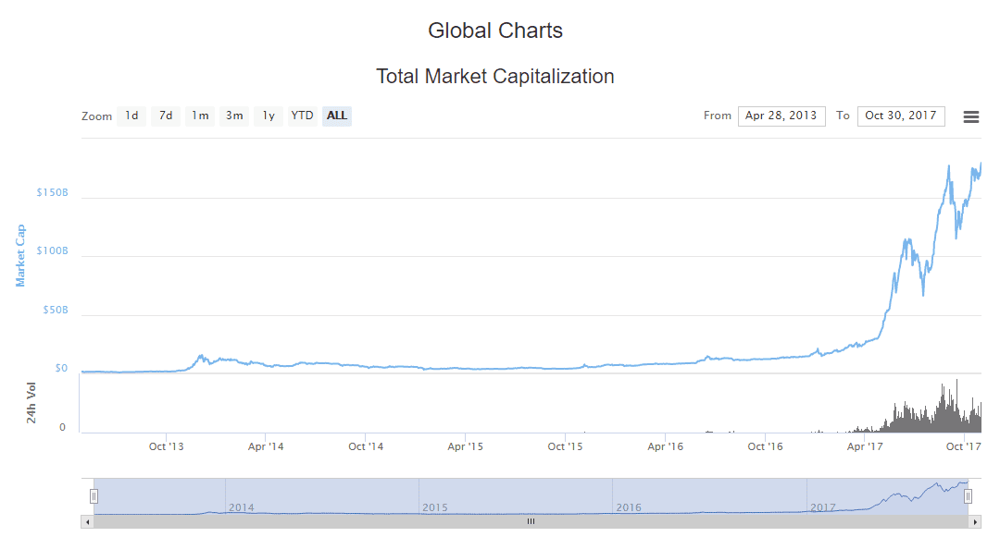

블록체인, 세계경제 이끄는 새로운 모터!

2017년, 세계 경제 1시장의 실물적 화폐는 더 이상 성장하기 힘들어졌다. 경제가 어려워지면 분야별 시장의 버블과 화폐 공급량을 조절하여 극복하였지만, 2008년 이후 경제 규모가 커지면서 어려움을 전 세계가 안겼다. 따라서 새로운 모터가 필요한데 그것은 암호학 분야의 끝판인 전자코드에 원본성을 부여한 ‘블록체인(Block Chain)’ 기술이다.
이 기술의 핵심은 ‘임의 조작’을 불가능하도록 고안되었으며, 대표적인 응용사례는 2008년 10월 ‘사토시 나가모토’라는 가명을 쓰는 프로그래머가 개발한 ‘비트코인’ 이다. 2009년 1월 프로그램 소스를 배포하여, 중앙은행 없이 전 세계적 P2P 방식으로 개인끼리 금융거래를 할 수 있게 설계했다. 거래장부는 SHA-256 기반의 암호 해시 함수를 사용해 여러 사용자의 서버에 분산하여 저장하였다.
이와 같은 기술로 이더리움 창시자 ‘비탈릭 부테린’은 결제 및 거래 관련 시스템에 집중하는 비트코인과 달리 거래나 결제뿐만 아니라 계약서, SNS, 이메일, 전자투표 등 다양한 애플리케이션을 투명하게 운영할 수 있게 확장성을 제공했다. 즉, 화폐로서 다용도 활용이 가능하도록 말이다. 또 이를 기반으로 코인마켓캡(Coinmarketcap.com)에 등재된 코인 수는 무려 1,277 가지(2017.11.09) 이상 존재하며 전 세계와 많은 이들에게 주목받는 상태이다.

2017년 11월 1일 월요일 오전 기점으로 암호화폐(Cryptocurrency) 전체 규모는 ‘208조 달러’ 최고점(ATH)을 갱신 중이다. 1995년부터 2000년까지 발생한 ‘닷컴 버블’은 인터넷 관련 분야가 성장하면서 산업 국가의 주식 시장이 빠르게 상승했는데, 이를 암호화폐 시장과 비교하면 차트 그래프가 상당히 유사하다. 심지어 비트코인(BTC) 그래프는 더욱더 가파른 경사로 빠르게 성장 중이다.
비트코인은 ‘2016년 12월부터 ~ 2017년 11월 1까지’ 약 10배 이상 상승을 보여줬다. 과연, 이 상황은 우연히 일어난 것일까? 필자는 절대 아니라 생각한다. 기존의 세계 경제는 너무나 커졌고 침체한 상태이며, 새로운 경제 구조를 원하고 있다. 이것은 세계 정부, 금융, 부동산 등 분야가 관심 두는 이유 중 하나이다. 하지만 이 시장은 모든 투자자와 알트코인을 쉽게 부자로 만들어주지 않는다. 따라서 한정적인 시간을 가진 우리는 그 기간 내 암호화폐에 대한 신념을 확립하고 투자하는게 좋다.
그렇다면, 우리와 같은 평범한 직장인 혹은 대학생은 이 시장에 어떻게 대응하면 좋을까? 사실 명백한 정답은 없지만, 우리가 현재 놓여있는 상황에 대응하는 자세를 지니면 좋다. 최대한 세계 경제와 블록체인 기술 내용을 공부하여 통찰력을 기르고, 심리적인 요소를 배제하면 작게나마 부자로 거듭날 것이다. 암호화폐 시장은 몇 년간 비트코인을 많이 소유한 자로부터 움직일 것이고, 점차 우리의 삶과 일상 속에 적용되어 자연스레 거대한 경제 규모가 안정적으로 탄생할 것이다.
끝.